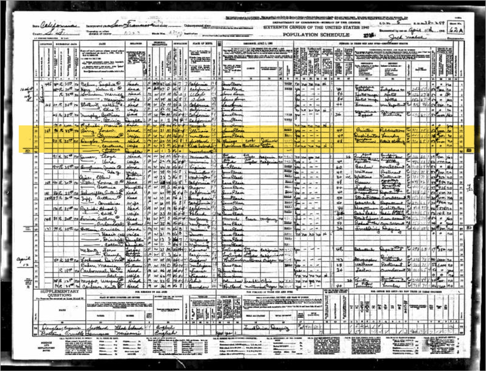

The Names He Carried · Academic Edition
Doug Garceau, comp., “1940 U.S. census: San Francisco, sheet 62A,” DOC-045, The Names He Carried: Academic Edition (https://douggarceau.com/the-names-he-carried/archive/items/doc-045.html : accessed [date]); original: 1940 U.S. census, San Francisco, ED 38-259, sheet 62A. NARA T627, roll 307.

This copy carries yellow highlighting or red outlining added for the book site. It is not on the original.
Tap an image to open it full size.
Everything as written, including misspellings. [?] marks an uncertain reading. Struck-through words are marked as struck through. Notes in square brackets describe the page and are not part of it.
[This copy is small and faint. The three Douglas lines and the supplementary line are given as far as they can be read; uncertain readings are marked [?]. The other 37 lines on the sheet are not transcribed here. The full page image is above.] [Printed] DEPARTMENT OF COMMERCE—BUREAU OF THE CENSUS. SIXTEENTH CENSUS OF THE UNITED STATES: 1940. POPULATION SCHEDULE State: California. County: S.F. Incorporated place: San Francisco. Township or other division of county: A.D. 23[?]. Block No.: [illegible] S.D. No. 5. E.D. No. 38-259. Sheet No. 62 A. Enumerated by me on April 11th, 1940. [Signed] Jack Mahee[?], Enumerator. [Columns, in order] Location: street, house number | Household data: number of household in order of visitation, home owned or rented, value of home or monthly rental, farm | Name | Relation | Personal description: sex, color or race, age at last birthday, marital status | Education: attended school since March 1, 1940, highest grade completed | Place of birth | Citizenship of the foreign born | Residence, April 1, 1935: city or town, county, state, on a farm | Persons 14 years old and over, employment status | Occupation, industry and class of worker | Weeks worked in 1939 | Income in 1939 Line 12 | 93 | R | 33.00 | No | Douglas, Laurence | Head | 0 | M | W | 32 | M | No | 8 | Scotland | [citizenship code, illegible] | Chicago | Cook | Illinois | No | Yes ... | 48 | Window Trimmer | Retail clothing | P | W | 3/2[?] | 65[?] | 1 | 52 | 2240[?] Line 13 | | | | | —, Constance | Wife | 1 | F | W | 27 | M | No | H4[?] | Rhode Island | | Providence | Providence[?] | Rhode Island | No | No ... H[?] Line 14 | | | | | —, Eugenie | Daughter | 2 | F | W | 1 | S | No | 0 | Massachusetts | | [blank] [Supplementary questions, at the foot of the sheet] Line 14 | Douglas, Eugenie | [Father's birthplace] Scotland | [Mother's birthplace] Rhode Island | [Mother tongue] English | [rest illegible]